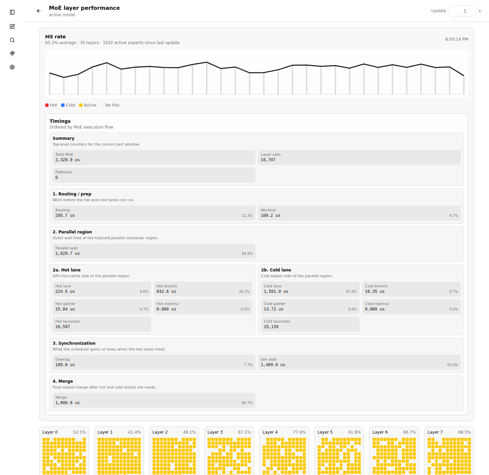

Build
Build with CUDA support. If the build directory already exists, the second command is enough.
This page is the operational companion to the
architecture explainer.
It assumes an already supported MoE architecture such as Qwen35Moe, Qwen3Next, or Gemma4.
The key rule is simple: keep the normal MoE experts on the CPU with --cpu-moe,
then add a selected GPU copy through --moe-hot-cache.
Use one profiling run to create the expert JSON. Then restart with that JSON as the hot-cache plan.
Build with CUDA support. If the build directory already exists, the second command is enough.
Run representative prompts once with --moe-layer-perf-out. The first run is slow because all experts remain on the CPU/RAM path.
Restart with --moe-hot-cache, a cache budget, and --cpu-moe. The hot experts are copied into VRAM at startup.
# 1. Configure and build
cmake -B build -DGGML_CUDA=ON
cmake --build build -j8
# 2. First profiling run. Send one or more representative requests, then stop the server.
./build/bin/llama-server \
--cpu-moe \
--moe-layer-perf-out moe-hot-cache.json \
--ctx-size <ctx_tokens> \
--device CUDA0 \
--n-gpu-layers 999 \
<your model and server args>
# 3. Normal hot-cache run. Keep ctx/model args the same as the profiling run.
./build/bin/llama-server \
--cpu-moe \
--moe-hot-cache moe-hot-cache.json \
--moe-hot-cache-max-mib -1 \
--moe-hot-cache-auto-reserve-mib 1024 \
--moe-hot-cache-update-rate 0.10 \
--ctx-size <ctx_tokens> \
--device CUDA0 \
--n-gpu-layers 999 \
<your model and server args>
# 4. Final speed run after tuning. Perf counters start disabled.
./build/bin/llama-server \
--no-perf \
--cpu-moe \
--moe-hot-cache moe-hot-cache.json \
--moe-hot-cache-max-mib -1 \
--moe-hot-cache-auto-reserve-mib 1024 \
--ctx-size <ctx_tokens> \
--device CUDA0 \
--n-gpu-layers 999 \
<your model and server args>--moe-layer-perf-out records expert usage.
For a pure speed measurement after tuning, use --no-perf. That removes the perf callback overhead,
but it also disables live MoE counters and leaves dynamic hot-cache updates without new counter data.
The full tuning loop is documented here so this page can stand alone as the main operating guide.
cmake --build build -j8 builds the default llama.cpp targets, including llama-server, llama-cli, tools, examples, tests, and the embedded Web UI.
Start with --cpu-moe and --moe-layer-perf-out, but without --moe-hot-cache. Run prompts that match the real workload, then stop the server so the JSON is written again on shutdown.
Use GET /moe-layer-perf or the Web UI page at #/moe-layer-perf. The initial JSON contains raw per-layer experts lists used to build the first cache.
Restart with the same model, context, device, and generation settings. Use --moe-hot-cache-max-mib -1 for auto-sizing or a positive MiB value for a fixed cache budget.
Use Full for diagnosis, Update for adaptive replacement with lower overhead, and Off or --no-perf for final throughput measurements.
Dynamic update handles small workload shifts inside the existing cache layout. For a different workload, collect a fresh profile; a coding cache can be worse for simple chat prompts.
--moe-layer-perf-out is only for the learning run. Do not use it for final speed measurements, and do not use --no-perf while learning the first expert file.
llama-bench also accepts --moe-layer-perf-out FNAME. It resets MoE perf counters after warmup, runs the measured benchmark repetitions, and writes the same JSON schema as GET /moe-layer-perf. Use this when you need repeatable PP/TG measurements without running llama-server. Treat synthetic TG runs as a hit-rate check: generated benchmark tokens can select experts that are not well represented in a hot-cache file learned from a different prompt.
The Web UI includes a live MoE layer performance page at #/moe-layer-perf.
Open it with the activity button next to the chat input actions. The dropdown next to that button controls
the runtime MoE perf mode: Full, Update, or Off. When the server starts
with --no-perf, the dropdown starts in Off.
The page also includes a Save JSON button next to Apply cache. It writes the
currently displayed /moe-layer-perf snapshot to a JSON file. Browsers that support the native
save-file picker let you choose the file name and destination; otherwise the browser handles it as a normal
download according to its download settings.
Collects all counters and timing fields for detailed tuning, including diagnostic split fields when enabled.
Collects only the data needed for dynamic hot-cache replacement and hit-rate visualization.
Disables MoE perf counters. Use this for the least distorted final tokens-per-second measurement.

The timing cards are ordered by execution flow: summary, routing/prep, parallel region,
hot and cold lanes, synchronization, then merge. Do not add all timing cards together.
Some values are nested or overlapping measurements. Parallel wall is the wall
time of the hot/cold region, Hot lane and Cold lane are lane wall
times, Overlap is time hidden by parallel execution, and Join wait
is time one lane waits for the other.
/moe-hot-cache lets you apply a new expert/perf JSON while the server is running.
It is meant for UI-driven tuning and for external controllers that already have a better expert list.
If an inference is running, the endpoint task waits in the server queue until all slots are idle. The cache is not mutated while a request is decoding.
The hot-cache buffer is not deleted or rebuilt. The updater compares current hot experts with the provided list and copies only the changed expert slices.
The endpoint applies with update_rate = 1.0. --moe-hot-cache-update-rate affects only automatic post-request updates, not this manual apply.
The JSON body uses the same schema as --moe-hot-cache and /moe-layer-perf.
It may contain first-run experts arrays or runtime hot_experts and
cold_experts arrays. The existing cache layout stays fixed: the endpoint can replace experts
inside the already allocated per-layer hot slots, but it cannot increase the total cache size or create new
hot slots for a layer that was not part of the initial cache.
# Preferred: apply an expert/perf JSON file directly.
curl -sS -X POST http://127.0.0.1:8080/moe-hot-cache \
-H 'Content-Type: application/json' \
--data-binary @moe-hot-cache.json
# Router mode: target one loaded model explicitly.
curl -sS -X POST 'http://127.0.0.1:28002/moe-hot-cache?model=unsloth/Qwen3.6-35B-A3B-GGUF:Q6_K_XL' \
-H 'Content-Type: application/json' \
--data-binary @moe-hot-cache.json
# Apply the server's current /moe-layer-perf snapshot.
# In router mode, pass ?model=... if more than one model is loaded.
curl -sS http://127.0.0.1:8080/moe-hot-cache
# GET can also carry a small URL-encoded JSON value.
# Prefer POST for real expert lists because they are usually large.
curl -sS --get http://127.0.0.1:8080/moe-hot-cache \
--data-urlencode 'json={"schema":"llama.cpp.moe_layer_opt_perf.v1","layers":[{"layer":0,"experts":[[12,100],[42,90]]}]}'
# Copy the live perf endpoint into the manual apply endpoint.
curl -sS http://127.0.0.1:8080/moe-layer-perf \
| curl -sS -X POST http://127.0.0.1:8080/moe-hot-cache \
-H 'Content-Type: application/json' \
--data-binary @-
A successful response returns HTTP 200 and a compact status object:
{
"success": true,
"active": true,
"update_rate": 1.0,
"exchanged": 47,
"candidates": 131,
"max_exchange": 131,
"hot_experts": 469,
"layers_changed": 29
}
While a manual apply request is pending, the automatic post-request hot-cache update is skipped for that
cycle. This prevents the automatic --moe-hot-cache-update-rate update from changing the cache
immediately before the manual list is applied.
#/moe-layer-perf page has an Apply cache button. It posts the currently
displayed list to /moe-hot-cache, waits for the server response, and then refreshes the view.
The adjacent Save JSON button saves the same displayed /moe-layer-perf snapshot
so it can be reused as a cache input or archived with a benchmark run.
Expected log lines:
MoE hot-cache manual apply requested; auto update will be skipped until it is handled
MoE hot-cache auto update skipped: manual /moe-hot-cache request pending
MoE hot-cache apply: mode = manual, rate = 100.00%, exchanged = ...Weighting controls how the expert list is ranked before the VRAM budget is packed. The same scoring path is used for initial cache creation and for dynamic updates after a request.
flatRanks experts inside each layer by hits, then interleaves equal ranks across layers.
--moe-hot-cache-layer-curve.pressureMultiplies expert hits by layer pressure from the perf JSON.
parallel_join_wait_time_per_call_us, then cold-hot lane delta, then cold slots per call, then wait per cold slot.--moe-hot-cache-layer-curve controls how aggressively slow layers get extra weight.smooth / smooth-pressureA conservative pressure mode with robust bounds and a smaller boost curve.
smooth, smooth-pressure, capped, capped-pressure, soft-pressure.pressure overreacts to noisy timing data.timeUses total MoE time per layer instead of hot/cold join pressure.
time, moe-time, decode-time.total_moe_time_per_call_us.balancedConverts each layer's local expert rank into a large global score.
balanced, rank, layer-rank.--moe-hot-cache-layer-curve.flat spreads too evenly but pressure is too aggressive.All modes use the parsed layer observations as the source of truth.
experts counts are used.hot_experts + cold_experts is used.
These are the knobs relevant to the MoE hot-cache path. In model_config.ini,
use the long argument name without the leading --, for example
moe-hot-cache-max-mib = -1.
| Argument | INI / env | Values and default | What it does |
|---|---|---|---|
--cpu-moe |
cpu-moe = trueLLAMA_ARG_CPU_MOE |
Boolean, default off | Practical requirement for this feature. Keeps the normal MoE experts on CPU/RAM so the hot cache can add selected GPU-resident expert copies and merge them with the cold path. |
--moe-layer-perf-out FNAME |
moe-layer-perf-out = FNAMELLAMA_ARG_MOE_LAYER_PERF_OUT |
Path, default unset | First-run profiling helper. In llama-server, enables MoE perf collection and writes the current /moe-layer-perf JSON after completed requests and during shutdown. In llama-bench, writes the same JSON after each measured benchmark test, with warmup counters excluded. |
--moe-hot-cache FNAME |
moe-hot-cache = FNAMELLAMA_ARG_MOE_HOT_CACHE |
Path, default unset | Reads the perf JSON used to select and build the initial hot-cache contents. Required when --moe-hot-cache-max-mib is not 0. |
--moe-hot-cache-max-mib N |
moe-hot-cache-max-mib = NLLAMA_ARG_MOE_HOT_CACHE_MAX_MIB |
0 disables, >0 fixed MiB, -1 auto-size. Default 0. |
Sets the cache budget. With -1, the code reads free VRAM on the selected GPU, subtracts reserves, and fills as much as safely fits. |
--moe-hot-cache-auto-reserve-mib N |
moe-hot-cache-auto-reserve-mib = NLLAMA_ARG_MOE_HOT_CACHE_AUTO_RESERVE_MIB |
Integer >= 0, default 1024 |
Used only with --moe-hot-cache-max-mib -1. Leaves this many MiB free for warmup, compute buffers, and transient CUDA allocations. |
--moe-hot-cache-update-rate N |
moe-hot-cache-update-rate = NLLAMA_ARG_MOE_HOT_CACHE_UPDATE_RATE |
Float 0.0 to 1.0, default 0.0 |
After a completed server request, replaces up to this fraction of hot-cache entries with better observed candidates. Needs active perf counters. |
--moe-hot-cache-weighting MODE--moe-hot-cache-qwen-weighting MODE |
moe-hot-cache-weighting = MODELLAMA_ARG_MOE_HOT_CACHE_WEIGHTINGLLAMA_MOE_HOT_CACHE_WEIGHTINGLLAMA_MOE_HOT_CACHE_QWEN_WEIGHTING |
flat, pressure, smooth, time, balanced. Default flat. |
Selects the expert ranking strategy for initial cache fill and dynamic updates. See the weighting section above for aliases and behavior. |
--moe-hot-cache-layer-curve N--moe-hot-cache-qwen-layer-curve N |
moe-hot-cache-layer-curve = NLLAMA_ARG_MOE_HOT_CACHE_LAYER_CURVELLAMA_MOE_HOT_CACHE_LAYER_CURVELLAMA_MOE_HOT_CACHE_QWEN_LAYER_CURVELLAMA_MOE_HOT_CACHE_GEMMA4_LAYER_CURVE |
Float 0.0 to 1.0, default 0.5 |
Controls how strongly pressure/time modes favor slower layers. 0.0 disables layer-pressure reshaping. 1.0 is aggressive. Ignored by flat and balanced. |
--moe-hot-cache-pp-reduce-merge MODE |
moe-hot-cache-pp-reduce-merge = MODELLAMA_ARG_MOE_HOT_CACHE_PP_REDUCE_MERGELLAMA_MOE_HOT_CACHE_PP_REDUCE_MERGE |
off, on, auto. Default off. |
Prompt-processing optimization. Reduces each hot/cold branch to [n_embd, n_tokens] before the final merge. In auto, it enables only for larger PP shapes: n_tokens >= 32 and capacity >= 64. The graph phase is explicit, so a one-token PP tail remains PP while tiny multi-token TG remains decode. |
| Control | Values and default | What it does |
|---|---|---|
GET /moe-layer-perf |
HTTP endpoint | Returns the current MoE perf JSON. In router mode, pass ?model=<name> if multiple models are loaded. |
POST /moe-layer-perf |
{"mode":"full"}, {"mode":"update"}, or {"mode":"off"} |
Switches live MoE perf collection mode at runtime and resets the current perf window. |
GET /moe-hot-cachePOST /moe-hot-cache |
HTTP endpoint | Applies a new hot-cache expert list at runtime. POST sends the JSON body explicitly. GET without a JSON body applies the current /moe-layer-perf snapshot. In router mode, pass ?model=<name> when multiple models are loaded. |
LLAMA_MOE_LAYER_PERF |
full, update, off. Default full; with --no-perf, initial mode is off. |
Initial MoE perf mode before any runtime POST /moe-layer-perf change. full enables the expensive timing callbacks and full expert lists for analysis. update keeps only the counters required for hit-rate display and dynamic cache replacement. off disables MoE perf collection and is the cleanest mode for final throughput measurements. |
--no-perf |
General llama.cpp flag | Starts with performance counters disabled. Useful for clean throughput measurement after tuning. Do not use it while learning an expert file. |
--log-tg-progress--no-log-tg-progress |
Boolean, default disabled | Periodically logs per-slot token-generation throughput while requests are running. This is only logging; it does not change the hot-cache graph. |
| Argument | Why it matters | Practical note |
|---|---|---|
--ctx-size N |
Auto cache sizing estimates KV memory from the context settings. | Required for --moe-hot-cache-max-mib -1. Keep it identical between profiling and hot-cache runs. |
--ubatch-size N |
Used by auto-budget KV estimates and by PP graph shape. | Large prompts can benefit from --moe-hot-cache-pp-reduce-merge auto. |
--device CUDA0 |
Controls which backend devices are used by the model. The hot cache picks the first GPU/IGPU device seen by the loaded model. | Use the intended fast GPU first when multiple devices are present. |
--n-gpu-layers N |
Controls non-MoE layer offload. It changes remaining VRAM and therefore the auto hot-cache budget. | With --cpu-moe, the regular MoE experts stay on CPU even when other layers are on GPU. |
--flash-attn on|off |
Changes KV layout and the auto-budget estimate. | Keep it identical between profiling and hot-cache runs. |
--parallel N |
Changes sequence count and KV reserve. Server auto mode may choose a value if unset. | For hot-cache tuning, prefer --parallel 1. Multiple parallel requests are not recommended because different prompts are likely to need different experts, which lowers the effective hit rate and makes dynamic updates chase mixed workloads. This is separate from internal hot/cold branch parallelization. |
--override-kv qwen35moe.expert_used_count=int:N |
Model-specific override that changes how many experts are selected per token. | Not a hot-cache argument. More selected experts can improve quality for some models but increases work and changes the best expert list. |
--override-tensor PATTERN=DEVICE |
Can force selected tensors or full layers to a backend. | Advanced only. It competes with hot-cache VRAM and can make learned hot-cache results hard to compare. |
--n-cpu-moe N |
Keeps only the first N MoE layers on CPU. | For this feature, prefer --cpu-moe. Partial CPU MoE can break the intended hot/cold graph assumptions. |
These are low-level development and comparison levers. They usually do not belong in normal start files unless you are isolating a performance issue.
| Environment variable | Values and default | Effect |
|---|---|---|
LLAMA_MOE_HOT_CACHE_PARALLEL |
auto default, 0/off, force |
Controls the internal hot/cold branch fork inside the GGML scheduler. In auto, the scheduler tries to run the GPU hot lane and CPU cold lane at the same time, but falls back to serial execution if the graph shape, split order, or work size is unsuitable. off keeps the hot-cache graph but computes the lanes serially, which is useful for A/B tests. force is a debugging mode: cases that would normally fall back are reported as errors so scheduler bugs are easier to catch. |
LLAMA_MOE_HOT_CACHE_PARALLEL_MIN_SLOTS |
Integer >= 0, default 2 |
Sets the minimum amount of MoE slot work required before auto parallelization starts. Very small hot/cold regions can be slower in parallel because the worker wakeup, split bookkeeping, and join cost can exceed the saved compute time. Raising this value avoids tiny parallel regions; setting it to 0 makes the scheduler try every valid region. |
LLAMA_MOE_HOT_CACHE_PREFIX_REDUCE_TASKS |
Integer 1..64, default 4 |
Caps how many CPU tasks the prefix-reduction helper may use when reducing compact cold-slot prefixes. A higher value can split reduction work over more CPU threads, but can also add scheduling overhead and cache pressure. It is mainly a diagnostic lever for cold-lane bottlenecks, not a normal tuning option. |
LLAMA_MOE_HOT_CACHE_GEMMA4_LAYER_CURVE |
Float 0.0..1.0, default 0.5 |
Gemma4-specific fallback for the layer-pressure curve when no generic CLI/INI curve is supplied. The curve controls how much slow layers influence expert ranking in pressure/time modes. 0.0 makes layer pressure irrelevant, while 1.0 strongly favors layers that appear expensive in the perf JSON. Prefer --moe-hot-cache-layer-curve for reproducible config files. |
LLAMA_MOE_HOT_CACHE_MERGE_SUM_ROWS |
Boolean, default on | Enables optimized helpers for summing MoE slot rows into the final layer output where the model profile allows it. This reduces generic graph overhead in merge-heavy paths. Turning it off is useful when validating numerical behavior or isolating whether a merge shortcut is causing a regression. |
LLAMA_MOE_HOT_CACHE_CPU_DECODE_ROUTING |
Boolean, default on | Moves decode-time hot/cold routing and worklist creation into a CPU custom operation for tiny decode batches. This avoids building larger GPU-side helper graphs for decode, which is usually faster for the supported MoE paths. The shortcut is gated by the explicit graph phase and the adapter's cpu_decode_routing_max_tokens, so prompt-processing tails do not use it. Disabling it forces the more graph-heavy route and is mostly useful for debugging routing differences. |
LLAMA_MOE_HOT_CACHE_DECODE_DIRECT_MERGE |
Boolean, default on where supported | Allows single-token decode to merge hot and cold results directly into the final FFN output shape. Without it, the graph may carry larger expert-slot intermediates and reduce them later. Direct merge cuts intermediate tensor work and is one of the main decode-speed shortcuts for supported Qwen and Gemma paths. |
LLAMA_MOE_HOT_CACHE_DECODE_STRIDED_SUM_ROWS |
Boolean, default on | Enables a strided sum-row helper used when decode still needs to reduce several slot rows. It is a narrower merge optimization than direct merge: direct merge avoids some intermediates, while strided sum rows makes the remaining row reduction cheaper. Disable only for regression isolation. |
LLAMA_MOE_HOT_CACHE_HOT_DUMMY_PADDING |
Boolean, default on | Adds dummy hot-lane work when the real hot lane would be empty or too small. This keeps graph shape and scheduler split detection stable across tokens, so the hot/cold region does not constantly change form. The dummy path is designed to contribute zero output; disabling it can expose shape-specific bugs but can also increase fallback risk. |
LLAMA_MOE_HOT_CACHE_SHARED_INPUT_ROW |
Boolean, default on | Allows decode cold work to reuse one input row when every cold expert uses the same current token vector. That avoids repeating or gathering identical input rows for each cold slot. It is mostly a decode micro-optimization and is only applied where the graph profile says the shared-row assumption is valid. |
LLAMA_MOE_HOT_CACHE_COLD_PREFIX_SUM |
Boolean, default on where supported | Treats valid cold slots as a compact prefix and reduces only that prefix. This avoids scanning or summing unused cold-slot capacity, which matters when only a few selected experts miss the hot cache. It is enabled only for profiles where the worklist layout guarantees that the cold prefix is compact. |
LLAMA_MOE_HOT_CACHE_COLD_PREFIX_WEIGHTED_SUM |
Boolean, default on with cold prefix sum | Combines expert weighting with the cold-prefix reduction. Instead of first producing cold expert outputs and then multiplying/merging weights in a separate step, the helper applies weights while summing the prefix. This saves one small operation chain on the cold path and is only meaningful when cold prefix sum is active. |
LLAMA_MOE_HOT_CACHE_DECODE_REPEAT_HOT_INPUT |
Boolean, default on | Creates the hot-lane input for decode by directly repeating the current token row for the selected hot slots. This avoids a more general gather path for the common one-token decode case. It primarily reduces hot-lane setup overhead and should stay on unless comparing graph variants. |
LLAMA_MOE_HOT_CACHE_COLD_FIRST_ROW_INPUT |
Boolean, default on | When shared cold input is enabled, this uses the first row as the canonical cold input row. That removes another small indexing/gather step from the cold lane. It is safe only in decode-style graph shapes where the active token input is shared by all cold slots. |
LLAMA_MOE_HOT_CACHE_BRANCH_REDUCE_MERGE |
Boolean, default on, architecture-dependent | Lets a branch reduce its expert-slot outputs before the final hot/cold merge. For Gemma4 this is a comparison and fallback lever around direct decode merge. Qwen profiles currently do not use it because the Qwen path is tuned around direct decode merge and compact prefix reductions. Disable it when testing whether Gemma4 fallbacks or merge costs come from branch-level reduction. |
These measurements are from the local Qwen3.6 coding workload and are included as a practical reference point, not as a general benchmark guarantee.
The measured setup used unsloth/Qwen3.6-35B-A3B-GGUF:Q6_K_XL with a
100000 token context and the coding prompt
Erstelle mir ein Snake Spiel in HTML und Java Script. The standard llama.cpp router
setup averaged 22.2 t/s. With MoE hot-cache enabled, auto-sizing selected
2367/10172 observed experts, used 6554 MiB of VRAM, and corresponded
to about 9.2 full MoE layers.
Router-mode reference for the coding prompt at 100k context.
The real hot-cache hit rate needed to beat the baseline in that setup.
Reached at 62.51% real hot-cache hit rate.
| Real hot-cache hit rate | Decode throughput | Baseline comparison |
|---|---|---|
22.63% | 18.35 t/s | Below baseline |
28.21% | 19.07 t/s | Below baseline |
35.31% | 20.05 t/s | Below baseline |
41.90% | 21.23 t/s | Below baseline |
48.33% | 22.80 t/s | Above baseline |
54.54% | 24.34 t/s | Above baseline |
60.76% | 25.77 t/s | Above baseline |
62.51% | 26.12 t/s | Above baseline |
2,0,3,6) and all router gates on CUDA0
did not improve throughput. The request timed out after 30 minutes at 1949 tokens with
41.33% hit rate. The hot cache shrank to 1389/10185 experts
(3877 MiB, about 5.4 full MoE layers). This kind of hybrid approach
would need a separate graph path that bypasses the hot/cold split for fully GPU-resident MoE layers.
Increase --moe-hot-cache-auto-reserve-mib if warmup or compute buffers hit CUDA OOM. Decrease it only when runs are stable and VRAM remains unused.
Use a new profile for materially different workloads. Dynamic update helps with drift, but it is not a replacement for representative first-run data.
For hot-cache tuning and benchmarking, use --parallel 1. Parallel server requests usually need different experts and reduce effective hit rate.